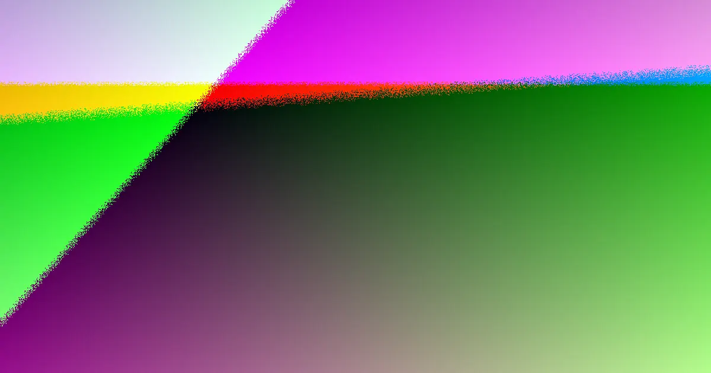

For a Toowoomba fence project, core checks include material choice, measured run length, old fence removal, site access, neighbour contribution, and approval triggers. Paid Queensland fencing work over $3,300 requires a QBCC licence, pool fencing must meet the Queensland pool safety standard, and fences exceeding 2m typically need certifier approval. A practical quote details materials, run length, removal, and access, facilitating neighbourly discussions and comparisons.
For local buyers, fencing contractors toowoomba signs you need understanding the essential signs and considerations for your fencing project in Toowoomba.
Fencing Contractors Toowoomba Signs You Need Explained
When engaging fencing contractors in Toowoomba, the initial steps involve accurately measuring the site, specifying the materials, determining the run length, planning for old fence removal, and assessing site access. This information is then compiled into a quote that allows for proper comparison and discussion with neighbours. A comprehensive quote should illuminate the less obvious aspects of the project. Key questions to ask include whether old fence removal is included, how the fence line will be measured, how gates will be incorporated, how slopes will be managed, and if any retaining walls or pool barriers will alter the project scope. For dividing fences, the quote must be clear enough for the adjoining owner to understand their share of the cost. Specifics on materials such as Colorbond, timber, PVC, aluminium, glass, chain wire, or tubular steel should be clearly stated. The run length should accurately reflect the measured fence line, not an approximation. The cost of removing the old fence should be itemised separately from the new installation if it impacts the overall price. Site access issues, such as narrow pathways, slopes, corners, and gate placement, need to be discussed and factored into the pricing before work commences.
Choosing the Right Fence Type
Selecting the appropriate fence type is crucial and depends on its intended use. Colorbond fencing is presented as a low-maintenance boundary option, available in a wide range of colours that complement various home styles. For properties seeking a softer or more traditional aesthetic, timber paling, lapped and capped, and picket fences made from treated pine or hardwood are suitable choices. PVC fencing offers a durable, low-maintenance alternative that eliminates the need for painting, while aluminium slat fencing is ideal for modern street frontages and courtyards, providing a contemporary look. Pool fencing is a distinct category where compliance with safety standards takes precedence over aesthetics. The guide mentions compliant glass and aluminium pool barriers built to the Queensland pool safety standard. For commercial properties, schools, and compounds, options like chain wire, tubular steel, and commercial-grade fencing are recommended. Driveway gates and automation systems are designed to integrate seamlessly with the chosen fence line, with options for solar-powered openers. Fence repairs also warrant an early assessment; the guide suggests obtaining a price for repairs to leaning posts, broken rails, or storm-damaged sections, and considering replacement if repairs are no longer cost-effective. This prompts the question of whether the issue is localised or if the entire fence run requires replacement.
Neighbour and Boundary Fence Considerations
Dividing fences involve more than just selecting materials; they require careful consideration of neighbourly relations and legal obligations. In Queensland, if a fence is situated on the boundary line, there is a formal process for cost-sharing between adjoining property owners. Generally, both owners are expected to contribute equally to a 'sufficient' dividing fence, typically defined as being between 0.5m and 1.8m high and constructed from standard materials. If one owner desires a fence exceeding these specifications, they may be responsible for the additional cost. Initiating a conversation with your neighbour, armed with a written quote, is often the most effective way to resolve potential disputes. Should an agreement not be reached, the formal step involves issuing a 'notice to contribute'. This notice must clearly outline the property details, fence line, proposed work, and estimated cost, accompanied by at least one written quotation. If no agreement is reached within one month of the notice, either owner can apply to the Queensland Civil and Administrative Tribunal (QCAT) within two months of the notice date. Toowoomba residents can benefit from understanding the distinction between a sufficient fence and an upgraded one, as discussing a standard replacement may be simpler than negotiating a more premium option. When requesting payment, it's important to document what is being replaced, the proposed materials, whether old fence removal is included, and if each owner can be invoiced separately for their share.
Height, Corners, and Pool Barrier Compliance
Before commencing fence installation, three key approval checks should be addressed. Firstly, fences up to 2 metres above natural ground level are generally considered accepted development in Queensland. Secondly, any fence exceeding 2 metres in height will be classified as building work and will require approval from a certifier. Thirdly, when a fence is installed on a retaining wall, the total height is measured from the natural ground level, combining the wall's height with the fence's height. This means a seemingly standard fence could exceed the 2-metre limit if combined with a substantial retaining wall. Corner blocks present unique design challenges due to sightline requirements at intersections. For front fencing on corner blocks, it's often kept at a lower height to ensure drivers have clear visibility across the intersection. Therefore, corner frontages should be discussed not only in terms of privacy but also as a visibility issue. Pool fencing must be treated as a separate category, with compliance being the primary concern before aesthetic considerations. When obtaining quotes for pool fencing, it's essential to clarify which sections of the fence line constitute the pool barrier, whether gates are part of this barrier, and how the final installation will be verified against the applicable safety standards.
- Initial Site Assessment. Measure the fence line accurately, note any slopes, and identify access points. Document the condition of any existing fence.
- Material Selection. Choose materials like Colorbond, timber, PVC, aluminium, glass, or chain wire based on your needs for durability, aesthetics, and privacy.
- Neighbour Consultation. Discuss your plans with your neighbour, especially for dividing fences. Present a written quote to facilitate discussion and potential cost-sharing.
- Obtain Detailed Quotes. Ensure quotes specify materials, run length, old fence removal, site access considerations, and any specific requirements like pool safety standards.
- Check Approval Requirements. Verify if your fence height exceeds 2 metres or is on a retaining wall, requiring certifier approval. Confirm pool barrier compliance.
Common questions
What is the QBCC licence trigger for fencing work in Queensland? Paid fencing work valued at $3,300 or more in Queensland requires a QBCC-licensed contractor. Some owner-built fences may be exempt.
How high can a fence be in Queensland before needing approval? Generally, a fence up to 2 metres above natural ground level is accepted development. Fences exceeding 2 metres require approval from a certifier.
Who pays for a dividing fence in Queensland? Adjoining owners generally contribute equally to a sufficient dividing fence. If one owner desires a fence exceeding standard specifications, they may need to cover the additional cost.
Fencing contractors in Toowoomba and surrounding areas.